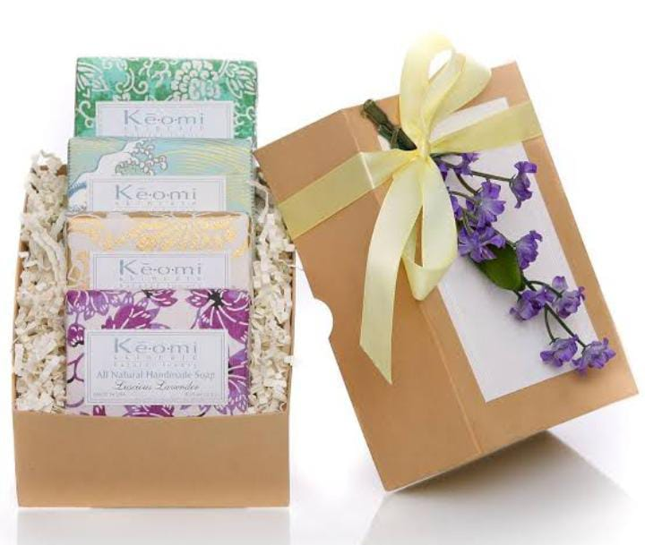
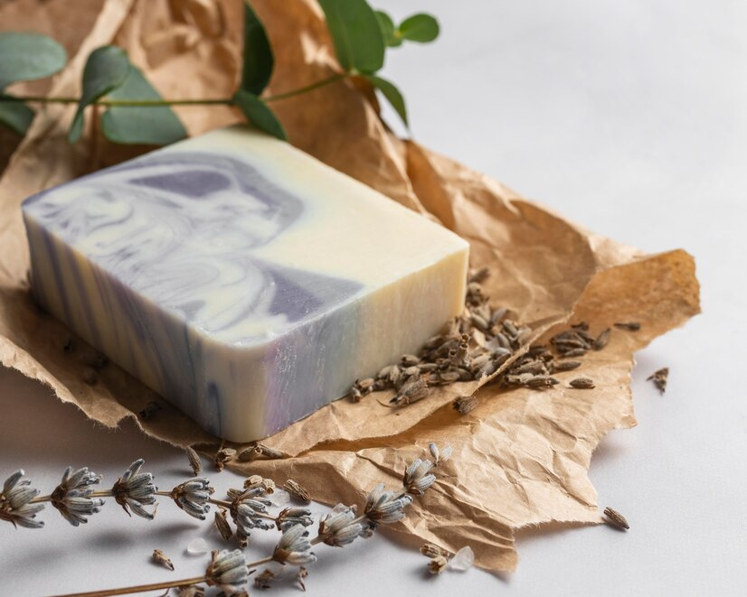
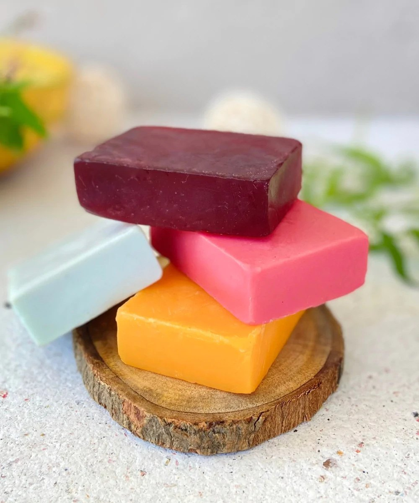
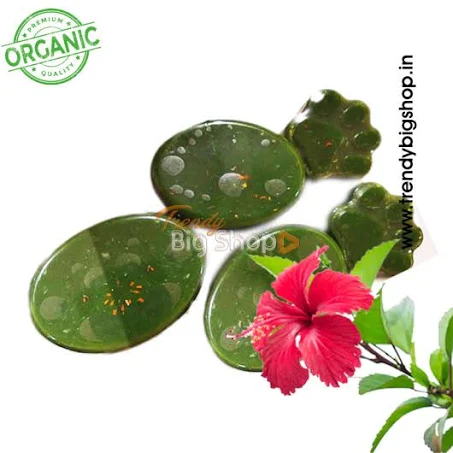

rganic soaps are made from natural ingredients, such as plant-based oils and botanical extracts, which are mild and nourishing. They do not contain harsh chemicals, detergents, or synthetic fragrances that can strip away the skin's natural oils and cause dryness, irritation, or allergic reactions.
To make organic soap at home, blend lye into distilled water carefully. Let the mixture cool, then mix in a blend of coconut, olive, and castor oil. Add in herbs, clay, or exfoliants, then blend the mixture and scent it with essential oils.
   